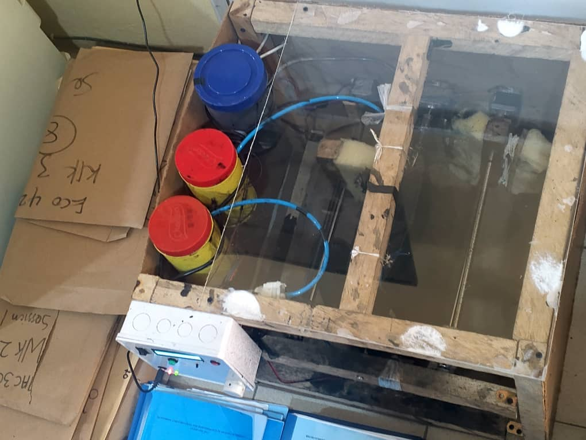

Circuit design & prototyping
Schematic capture in KiCad, simulation in Proteus, breadboarding, and building relay, driver and power-regulation circuits for high-current loads.
Electronic and Computer Engineering graduate who builds systems end to end, from circuit schematics and embedded firmware to the software people use. Interested in embedded systems, AI and intelligent control.
I studied Electronic and Computer Engineering at Lagos State University. I enjoy projects where hardware and software meet: sensors, actuators and microcontrollers running firmware I write, often connected to software I build.
For my final year project I designed and built an automated shoe polishing machine, taking it from CAD model to working prototype. Since July 2024 I have worked as a software developer at Exec200 Systems, building business applications for clients. I now want to pursue a research master's that brings these two strands together: embedded systems that sense, decide and act on their own.
B.Sc. Electronic and Computer Engineering
Lagos State University · Graduated 2025
CGPA 4.44 / 5.00, Second Class Upper Division (2:1)

Four stepper motors, dual-axis brushing and a polish-dispensing system, all coordinated by Arduino state-machine firmware. Polished about 90% of the shoe surface in testing.
Read the full case study →Every project has its own page with the problem, approach, results and documentation. Select one to read more.
Professional, laboratory and volunteer roles. Each links to a detail page.
Hands-on engineering work, from the lab bench to the workshop.
Schematic capture in KiCad, simulation in Proteus, breadboarding, and building relay, driver and power-regulation circuits for high-current loads.
Checked transistor-level logic gates against truth tables with an oscilloscope and multimeter, and analysed noise margins and switching delays.
CAD modelling in Fusion 360, then building with lead screws, guide rods, couplers, bearings and dampers. Also has industrial machine-operation experience.
As a SWEP Laboratory Assistant, helped students set up experiments and use equipment safely in the ECE laboratory.
C++, Python, JavaScript, SQL
Arduino, AVR microcontrollers, firmware development, sensors & actuators, GSM/Bluetooth modules, motor drivers, UART / SPI / I²C
Transistor-level logic design, circuit design, sensor feedback loops, power isolation
Node.js / Express, REST APIs, PostgreSQL, MySQL, React, OOP, system architecture
SharePoint Framework (SPFx), Power Platform (PL-900 certified), Microsoft 365, PDFMake
Git / GitHub, KiCad, Fusion 360, Proteus, Arduino IDE, Postman, VS Code
Skills a research environment needs, each with where I developed it.
Wrote a full five-chapter engineering report (literature review, methodology, results) and an end-user manual for my final year project.
Reviewed more than 30 sources on automation, control and polishing mechanisms, identified gaps in existing systems, and designed a solution to address them.
Traced the 10% coverage gap in my prototype to the fixed holder's contact points, and proposed an adaptive mechanism as future work.
Served as General Secretary of MSSN Epe Campus: coordinating meetings and records, and handling official correspondence.
Guided students through laboratory experiments as a SWEP Laboratory Assistant.
Presented AQUATECH to judges and won 1st place at the AgroInnovatex Challenge. Also worked as a volunteer graphic designer.
More than two years delivering client software at Exec200 Systems, working to deadlines, requirements and code standards.
Honourable Member of the 25th Engineering Society Parliamentary Council (ESPC) Assembly.
Full reports and documents behind the work above.
Five chapters: introduction, literature review, methodology, results & discussion, conclusions. Includes the circuit diagram and firmware listing.
PDF · User manualSafety, status indicators, step-by-step operation and maintenance, written for end users.
PDF · Curriculum vitaeEducation, projects, experience, certifications and leadership.
June 2026
Power Learn Project Africa
Python, web development, databases, Dart/Flutter, REST APIs, JWT/OAuth, microservices basics
December 2024
Muslim Students' Society of Nigeria (MSSN), LASU Epe Campus
Aug 2024 – Jul 2025
Muslim Students' Society of Nigeria (MSSN), LASU Epe Campus
2023 – Aug 2024
25th Engineering Society Parliamentary Council (ESPC) Assembly, LASU
Open to research master's opportunities and conversations with prospective supervisors. Referees available on request.